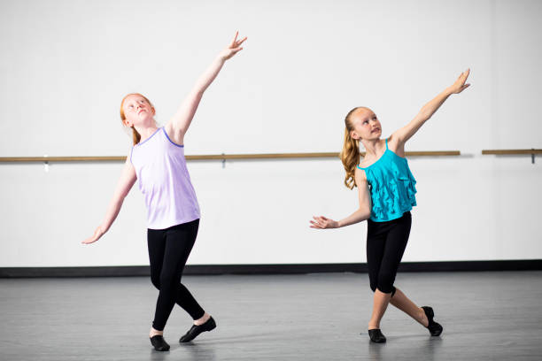

I play a lot of Dungeons and Dragons with my friends (including the writer of this page!), and have a lot of fun making unique characters for every games I play in. My favorite (or perhaps least favorite) story was when we were visiting a mill controlled by hags. The hags had given the party some magical pasteries that put them to sleep. As an elf however, I was immune to the effects. We were escorting a small child to the next town over, and I had to sit pretty much helplessly as I felt the child pulled away and turned into the party's breakfast the next day

I really enjoy organizing, its relaxing and productive at the same time. I often find myself reorganizing my desk or my bathroom for fun. There are many different ways you can organize a space, and it's fun to play tetris with your things to find the best way they all fit together. I highly reccomend, the next time you're bored or stressed, open up a drawer and reorganize it.

There's nothing more nostalgic than curling up on the couch with a fuzzy blanket, a bowl of popcorn, and a good movie. I love watching movies, it's a truly wonderful way to pass the time. You can go on an adventure, or visit a childhood memory, or even solve a crime. Movies carry you away into a new and wonderful world where you can be anything and do anything, through the eyes of some amazing actors. Movies have always been a way that my family bonds, and I continue to watch movies when i'm away from them to feel that connection again.

Dancing was a big part of my life growing up, I danced for nine years as a kid. I started with acrobatics and ballet as a little six year old. After two years of that, I wanted something different. A teacher at my dance school also worked at another dance school, they specialized in a type of dance I had never heard of: Clogging. I went to a class to watch one weekend, and it was love at first sight. I clogged for the next seven years, I only stopped because high school was getting to be too much work on top of dancing. I wish I could dance again, but it's hard to find classes for young adults. I will never forget those years of dancing, they were so fun, and I made so many lasting memories.
